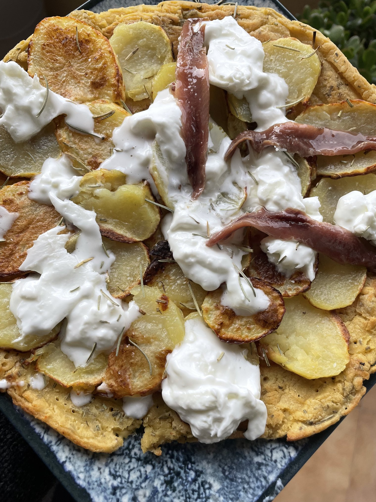

Crep soca con patata al horno, burrata y anchoas
Ingredientes
2×
- 2 patatas
- aceite de oliva
- sal
- 100 g de harina de garbanzo
- 250 ml de agua
- romero
- 1 burrata
- 4 anchoas

Preparación
Paso 1
Cortar 2 patatas en rodajas finas y hornearlas 30min a 200ºC con aceite de oliva y sal.
Paso 2
Mezclar 100 g de harina de garbanzo con 250 ml de agua, romero y sal. Cocer la crep en una sartén grande con aceite, unos minutos por cada lado.
Paso 3
Poner encima las patatas, 1 burrata desmenuzada y 4 anchoas.